この演習室のコンピュータは普通のパソコンですが，この講義は Windows や MacOS X ではなく Linux を使って進めます．実社会では Windows が９割以上を占めるため，その使い方について学ぶことは非常に重要ですが，この講義ではこではコンピュータの使い方（あるいは Windows の使い方）よりももっと基本的な，コンピュータというシステムを形作っているさまざまな考え方に触れる事を目指したいと考えています．
演習室のコンピュータは Windows も使えるようになっているので，必要な人は自分で勉強してください（基礎教養セミナーにおいて論文の書き方やプレゼンの仕方を指導する場合があるので，その時に教えてもらえるかもしれません）．
この講義では，皆さんのコンピュータの使用経験にかかわらず，皆，同じスタートラインに立つものして進めます．したがって，
※ この講義（および，続く「情報処理II」「情報処理III」等）では Linux (VineLinux 3.2) を使用します．
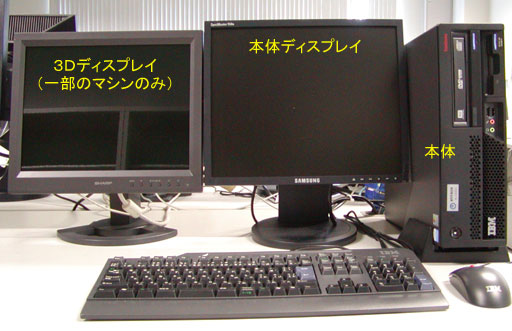
CPUとメモリコンピュータは計算をする機械ですが，そのためには計算の対象となるデータや計算の手順をどこかに覚えておく必要があります．そのための機構がメモリであり，CPU (Central Processing Unit: 中央演算処理装置) は，メモリから計算の手順やデータを取り出しながら計算を進め答えを求める，コンピュータの心臓部です．CPUの計算は一定のタイミングに沿って規則的に進められますが，そのタイミングは動作周波数（動作クロック）で決まります．一般に，この値が高いほど速く計算できることになります．3.4GHz（ギガヘルツ）は3.4×109Hzです．またメモリが大きいほどたくさんのデータやプログラムを一度に扱えることになります．1GB（ギガバイト）は1024×1024×1024バイト，英字で10億文字あまりを記憶できます．教科書の２～４ページを読んでください．ちなみに Core 2 Duo, Pentium, Celelon, Athron, Phenom, PowerPC などは，CPU に付けられたブランド名です．
それぞれのパソコンはこの教室内のローカルエリアネットワーク (LAN) に接続され， 和歌山大学全体の LAN を通じて大学の外のネットワーク，いわゆるインターネットに（常時）接続されています． したがって，皆さんはこのコンピュータを使っていつでも自由にメール（電子メール，Eメール）を送ったり Web サーフィン（「インターネット」の「ホームページ」を「見る」こと）を行うことができます．もちろん，ワープロを使ってレポートを書いたり，自分の Web ページや CG を作ったりすることもできます．
皆さんがこのコンピュータ上で作成したファイル（データやプログラム等）は， LAN を介して別の場所にあるファイルサーバと呼ばれるコンピュータに保存されます． したがって，この教室のどのコンピュータを使っても， 以前に保存したデータやプログラムを取り出すことができます．また，メールはメールサーバに蓄えられます．なお下図の RAID ドライブは，冗長構成をとることによって装置の一部が故障してもデータは保全される記憶装置，ハブはネットワークの集線装置，ルータはネットワーク同士を相互に接続する交換機です．
コンピュータとコンピュータの間にあるディスプレイは，教材提示装置のものです． ここには教員用のコンピュータの画面やビデオ，スライド等を表示します．教員の指示に従って電源を入れてください．
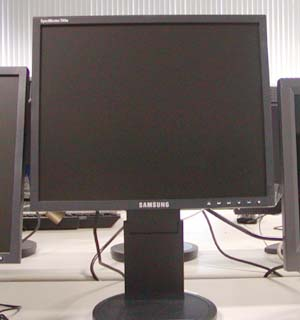
皆さんは，ここ（システム工学部A棟601号室）を含めて，以下の場所にあるコンピュータを使用できます．

このシステム情報学センターには， ３つの演習室に加えて２つのオープンスペースラボラトリー (OSL)があり， 自習等に使用することができます．
大学内のコンピュータを使用する場合は，いくつかの注意点があります． 特に，演習室では以下の行為は厳禁です． 利用マナーが悪い場合は，ユーザアカウント（利用権）を停止する場合があります．
上記のほかにも，大学のコンピュータやインターネットを使用する上での注意事項があります．一つはセキュリティ上の事項，もう一つは法律上の事項です．教科書の８～１０ページをよく読んでください．以下に，この演習室特有の事項について述べます．
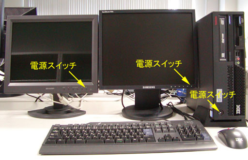
電源を入れると，起動処理の後，一旦キーボードからの入力を待ちます．
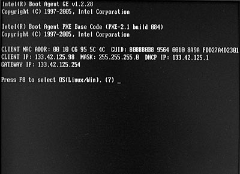
このまま何もせずにいれば，8秒後に Linux (現在は VineLinux 3.2) が起動します．Windows XP を使用したければ，ここで[F8] キーをタイプしてください．オペレーティングシステムの選択メニューが現れます．
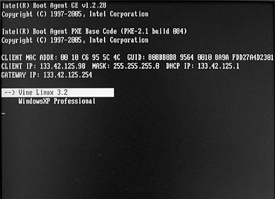
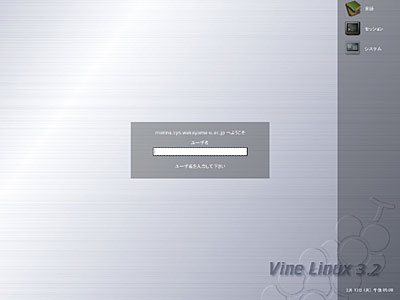
コンピュータの起動に成功すると，上のようなログインウィンドウが現れます．もし Windows XP Professional を起動してしまったときは，[Ctrl] キーと [Alt] キーを同時に押しながら [Delete] キーをタイプ (Ctrl-Alt-Del) し， Windows XP のログイン画面から再起動を選んでください．
オペレーティングシステムというソフトウェアには，大雑把に言って次の２つの役割があります．
コンピュータは CPU をはじめ，メモリ，ハードディスク，ディスプレイ，キーボード，マウスなど，数多くの部品で構成されています．このような部品や，その部品の集まりであるコンピュータの本体のことを，私たちはコンピュータのハードウェアと呼んでいます．
私たちがコンピュータを使うためには，このハードウェアの機能をうまく組み合わせることが必要になります．例えばワープロに１文字打ち込むというなんてことはない操作ですら，コンピュータがキーボードでタイプされた文字が何か調べ，それを画面に表示し，そして記憶している文書の中に挿入するというさまざまな知識（あるいは手順）を，コンピュータ自身が知っているからこそ実現できるのです．このような知識のことを，私たちはコンピュータのソフトウェアと呼んでいます．
そして，このソフトウェアのうち，利用者が実際に仕事をするために使うワープロなどのソフトウェアのことを，アプリケーションソフトウェアと呼びます．一方，コンピュータのハードウェア自体を制御したり，アプリケーションソフトウェアがハードウェアの機能を使うときに，その仲立ちをするための知識として働くソフトウェアのことを，システムソフトウェアあるいはオペレーティングシステム(OS)と言います．
コンピュータの個々の部品や，それらが果たす機能（CPUなら計算する機能，メモリやディスクなら記憶する機能）は有限ですから(無限に速く計算することもできないし，記憶できる情報の量にも限界がある)，これらは限りある資源のようなものです．したがって，このようなものをコンピュータの資源（リソース）と呼んだりします．
オペレーティングシステムは，この資源を効率よく使えるように管理するソフトウェアです．そしてオペレーティングシステムは，アプリケーションソフトウェアに対して，自分が管理しているハードウェアの機能を使用するための抽象化されたインタフェースを提供します．
キーボードのキーにはいくつかの種類があります．
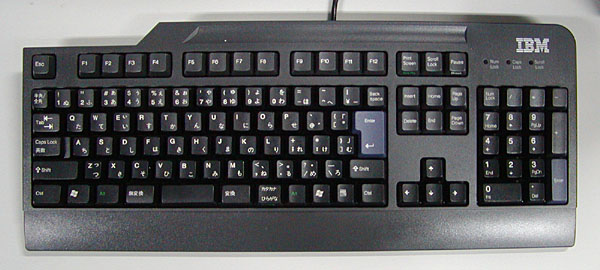
キーボードにはこのほかに矢印キーや種々のファンクションキーがありますが， それらに付いては適宜解説します．
Linux や UNIX 系オペレーティングシステムでは，コンピュータを利用するために，まずそのコンピュータのユーザアカウント（利用権）を取得する必要があります．皆さんのユーザアカウントは，演習室のコンピュータを使用するために，既にシステム情報学センターから取得してあります．皆さんの手元にある利用承認書には，そのユーザアカウントを使用するための登録名（ログイン名）と， その暗証番号（パスワード）が記載されています．
演習室のコンピュータを使用するには，まずそのログイン名とパスワードを使って，ログインという作業を行う必要があります．それでは，皆さんがお持ちの利用承認書に書かれているログイン名（ユーザ名）とパスワードを使ってコンピュータにログインしてください．なお，このログイン名とパスワードは，「１．５ コンピュータ演習室について」に挙げたいずれの演習室でも共通に使用できます．また，Windows を使う場合も同じユーザ名とパスワードを使用します．
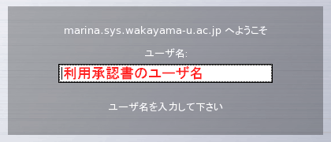
「ログイン名」の欄にログイン名を入力します．承認書に書かれているログイン名を， キーボードをタイプして入力してください．打ち間違えたときは，[Backspace]キーをタイプすれば１文字消すことができます．全部打ち終えたら [Enter] キーをタイプしてください． すると打ち込んだユーザ名が消えて，次にパスワードの入力を求めてきます．
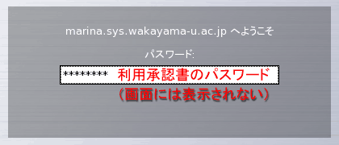
ここには承認書に書かれているパスワードをキーボードをタイプして入力してください．他人に見られないようにするために，タイプしたパスワードは画面には表示されません． 大文字をタイプするには [Shift] キーを押しながらその文字をタイプしてください．
ログイン名やパスワードを打ち間違えたときログイン名やパスワードを間違えると， 再度ログイン名の入力画面が現れます．この場合はもう一度ログイン名から入れなおしてください．
ログインに成功すると次のような画面が現れます．
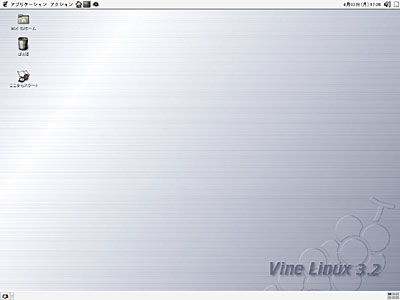
マウスを机の上で滑らすように動かすと， それにつれて画面上の矢印（マウスカーソル，これは場合によって I や時計などいろいろ形を変えます）が動きます．このマウスを動かしてマウスカーソルを“目的地”の上に移動し，そこでボタンを押して，コンピュータの操作をします．
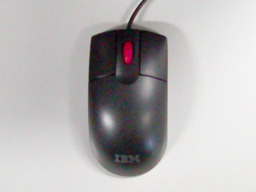
このボタンの押し方には，いくつかのパターンがあります．
コンピュータを起動すると，まずオペレーティングシステムが起動します． このオペレーティングシステムの重要な役割のひとつに， ディスプレイやキーボードなどの入出力装置の管理があります．特に最近のオペレーティングシステムでは， ディスプレイ上に複数の仮想的な画面（ウィンドウ，窓）を開いて複数の作業を同時にこなすことができる ウィンドウシステムを搭載することが一般的です．Microsoft の Windows や Apple の MacOS では，ウィンドウシステムはオペレーティングシステムに組み込まれていますが， この講義で使う Linux や Unix では MIT(マサチューセッツ工科大学） で開発された X Window System という (オペレーティングシステムとは独立した)ソフトウェアがよく使用されます．
GNOME 端末などのウィンドウシステムに対応したアプリケーションソフトウェアは，自分が行おうとする画面表示をウィンドウシステムに対して要求します．ウィンドウシステムはこの要求に基づいて画面表示を行います．言わば，ウィンドウシステムはお客の要求にしたがって食事を出すサーバ（給仕）であり， アプリケーションソフトウェアはサーバーに対して要求を出すクライアント（客)の役割を果たします．したがって，このようなソフトウェアの形態をサーバ・クライアントモデルと呼びます．
X Window System では，画面表示用のハードウェア（ビデオカード等）を制御するソフトウェアのことを X サーバ，X サーバに対して画面表示を要求するソフトウェアのことを X クライアントと呼びます．X Window System における X サーバと X クライアント間の通信はネットワークに対して透過的であり，ある X クライアントの画面表示を，LAN 等を介して他のコンピュータ上で稼動している X サーバに出力することができます．
画面の左上に，以下のような文字や絵記号の列が描かれていると思います．このようにシンボル化されたオブジェクト（対象）を一般にアイコン（図記号・絵記号）と呼びます．画面の上部や下部の領域はパネルと呼びます．
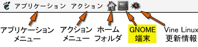
では，この中のGNOME 端末のアイコンをマウスの左ボタンでクリックしてみてください．すると，下のような“ウィンドウ”が現れると思います．以降，特に断らない限り，「クリックする」と指示された時にはマウスの左ボタンを使ってください．
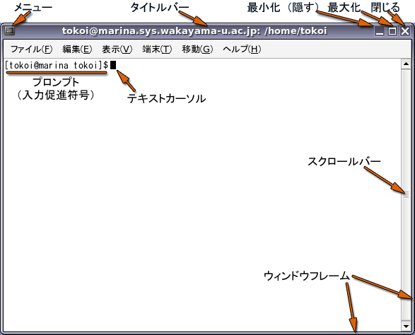
GNOME 端末は，gnome-terminal というアプリケーションソフトウェアです．この中でさらにシェルと呼ばれるプログラムが稼動しています．シェルはプロンプト（入力促進符号）を表示して，利用者がコマンド（指令）を入力するのを待っています．
このウィンドウの周囲の枠は GNOME 端末自身が付けているのではなく，ウィンドウマネージャという別のソフトウェアが付けています（スクロールバーは GNOME 端末自身のものです)．
ウィンドウを開くと，画面の下部にあるパネルの中にあるタスク・リストに，そのウィンドウを示すボタンが現れます．選択されているウィンドウ（利用者の操作の対象になっているウィンドウ）に対応するボタンは「へこんで」表示されます．隠されたウィンドウに対応するボタンは「グレー」になっています．このボタンをクリックして操作するウィンドウを切り替えたり，ウィンドウを隠したりできます．
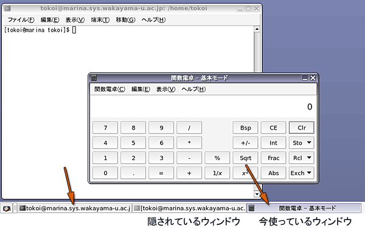
ウィンドウマネージャはウィンドウシステム上の個々のウィンドウを管理し，マウスの操作などの情報をウィンドウシステムやアプリケーションソフトウェアに伝達します．ウィンドウを移動したり，ウィンドウのサイズを変えたり，ウィンドウを閉じたりする操作は，このウィンドウマネージャによって実現されています．
X Window System ではウィンドウマネージャがウィンドウシステムやオペレーティングシステムから独立しているために，ウィンドウマネージャやデスクトップ環境が交換可能です． これらを別のものに交換することによって， コンピュータの画面の見かけや操作方法を全く異なるものに変更することができます．この講義では metacity というウィンドウマネージャを使用しています．
デスクトップ環境について
ウィンドウを移動するには，タイトルバーをドラッグしてください．
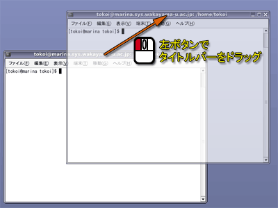
ウィンドウのサイズを変更するには，ウィンドウフレームをドラッグしてください．
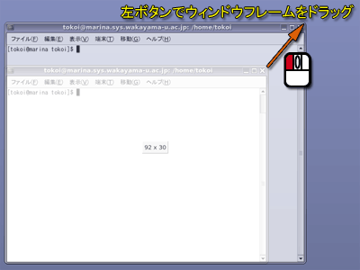
他のウィンドウで隠されてしまったウィンドウを前面に出すには，タイトルバーをクリックしてください．
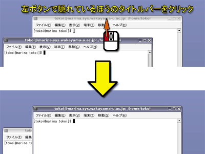
手前のウィンドウが邪魔なときは，タイトルバーをマウスの中央ボタンでクリックしてください．
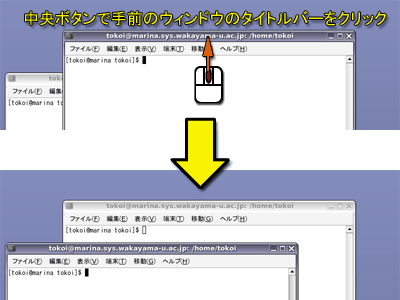
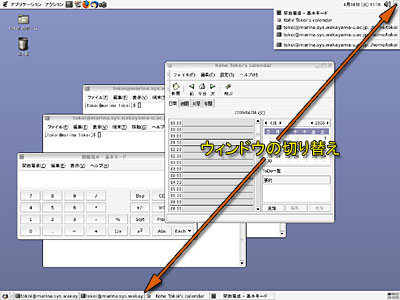
ウィンドウを最小化するには，「最小化」ボタンをクリックしてください．
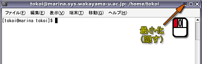
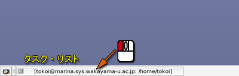
ウィンドウを最大化するには，「最大化」ボタンをクリックしてください．
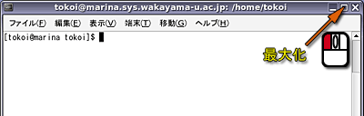
次の２つの方法があります．
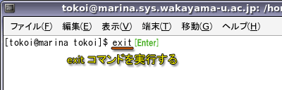
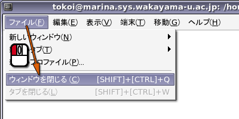
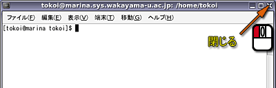
タイトルバーの左端にあるマークをクリックしたり，タイトルバーやウィンドウフレーム上でマウスの右ボタンでクリックすると，ポップアップメニューが現れます．
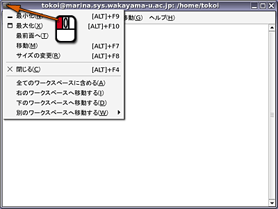
ポップアップメニューからはこれまでに述べたウィンドウ操作のほか，より高度な操作が行えるようになっています．
受講登録やレポート提出，休講通知の閲覧などは，「教育サポートシステム (LiveCampus)」を使用して行う必要があります．LiveCampus にアクセスするには，Web ブラウザを使用する必要があります．Web ブラウザについては次回説明する予定ですが，受講登録の期限に間に合わないため，ここで LiveCampus へのアクセスの仕方について簡単に説明します．
まず，Web ブラウザを起動します．ここでは Linux 上で Firefox を使いますが，もちろん，Windows 上で Internet Explorer を使っても構いません．現時点では Internet Explorer 6.0 (Windows版)，Internet Explorer 7.0 (Windows版)，Safari 1.0 (MacOS版)，Firefox 2.0 (Windows版) での動作が確認されています．
まず，画面の左上にある「アプリケーション」をクリックしてメニューを開き，「インターネット」を選んで，そこから「Firefox コミュニティエディション」を選んでください．
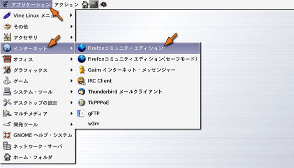
Firefox が開いたら，ウィンドウの上部にある「アドレスバー」に下記の内容をタイプして，[Enter] キーをタイプしてください．
| 和歌山大学のホームページ |
|---|
| http://www.wakayama-u.ac.jp/ |
和歌山大学のホームページが開いたら，その下方にある「在校生・教職員向け情報」をクリックしてください．
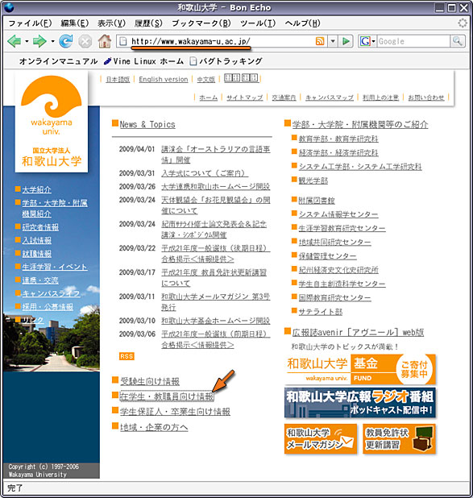
「在校生・教職員向け情報」のページが表示されたら，「教育サポートシステム (LiveCampus)」をクリックしてください．
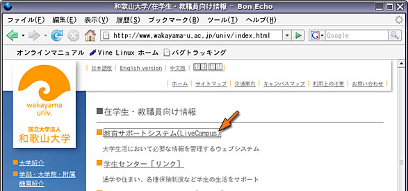
「教育サポートシステム (LiveCampus)」のウィンドウが表示されたら，「学生の方はこちら」をクリックしてください．
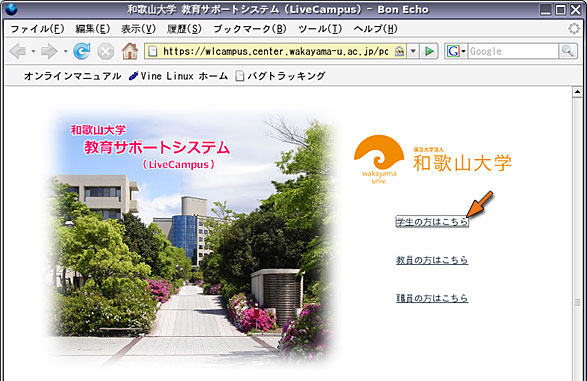
LiveCampus のログインウィンドウが現れたら，「利用承認書のユーザ名」と「利用承認書のパスワード」を入力して，「ログインする」をクリックしてください．
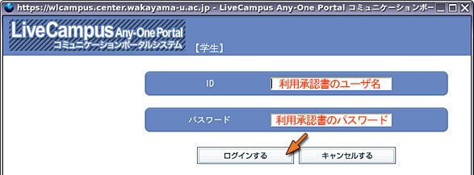
キーボードはマウスと並んで， コンピュータを操作するときにもっとも良く使われる周辺装置 （ペリフェラル）です． これがうまく使えないと，コンピュータそのものが嫌いになってしまうので，キーボードの練習にはちょっと時間を割きたいと思います．
コンソールのウィンドウを一度クリックしてください．そしてキーボードから typing とタイプし， その後 [Enter] キーを押してください．
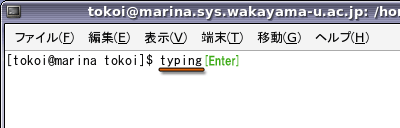
すると，次のような表示が現れます．表示にしたがって練習を進めてください．途中で終了するときは Ctrl-C（[Ctrl]キーを押しながら C のキーをタイプ）してください．
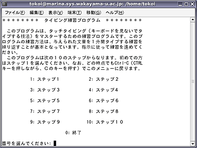
毎回１ステップずつ，１０～１５分くらい練習します．途中「５回繰り返せ」「３回繰り返せ」という指示があると思いますが，時間がないので１回練習したらそのまま次に進んでください．次のステップに移行する時に「次に進みますか」という問い合わせが出るので，とりあえずそこまで進んでください．
この講義の１１回目でタイピング能力のテストを行いますから， うまくできない人は空き時間を使って練習しておいてください．
VDT作業についてパソコンを使った作業は，それなりに疲れます．「VDT作業について」を参照してください．
- 空調を調整しましょう（温度、湿度、風速）。周囲の人や教員にも相談してください
- ディスプレイを調整しましょう（映り込み、角度、位置、輝度、コントラスト）
- 姿勢（ディスプレイとの位置、椅子の高さ調整）
- 作業時間と休息（休憩は１時間に10分以上意識してもうけましょう）
- ときどき，周りの人と会話し，気分転換しましょう
- ストレス，不眠が強くなったら周りのひとに相談したり，保健管理センターなどを気軽に受診しましょう
コンピュータの使用が終わったら， コンピュータにログインする前の状態に戻します．画面の上部にあるメニューのアクションの中から，ログアウトを選択してください．
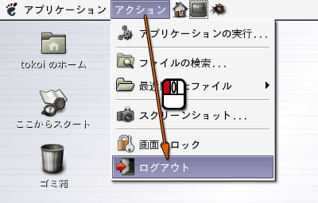
次に，「本当にログアウトしますか？」というウィンドウが現れますので，アクションの中から「ログアウト」を選択し（最初から選択されていると思います），「OK」をクリックするか，[Enter] キーをタイプしてください．これでログアウト完了です．
なお，電源を切る場合は，ここでアクションの中から「シャットダウン」を選択してから「OK」をクリックしてください．ログアウト後に電源を切る場合は，ログイン画面の「システム」をクリックして「コンピュータを停止」を選んだ後，「OK」をクリックするか，電源スイッチを押してください．
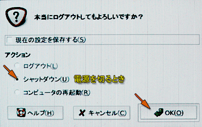
あとはディスプレイと教材提示装置のディスプレイの電源を切ってください．
以下の質問に対する回答をA4サイズの用紙１枚に書き，次回の講義開始時に提出してください．学籍番号と名前を忘れずに記入して置いてください．